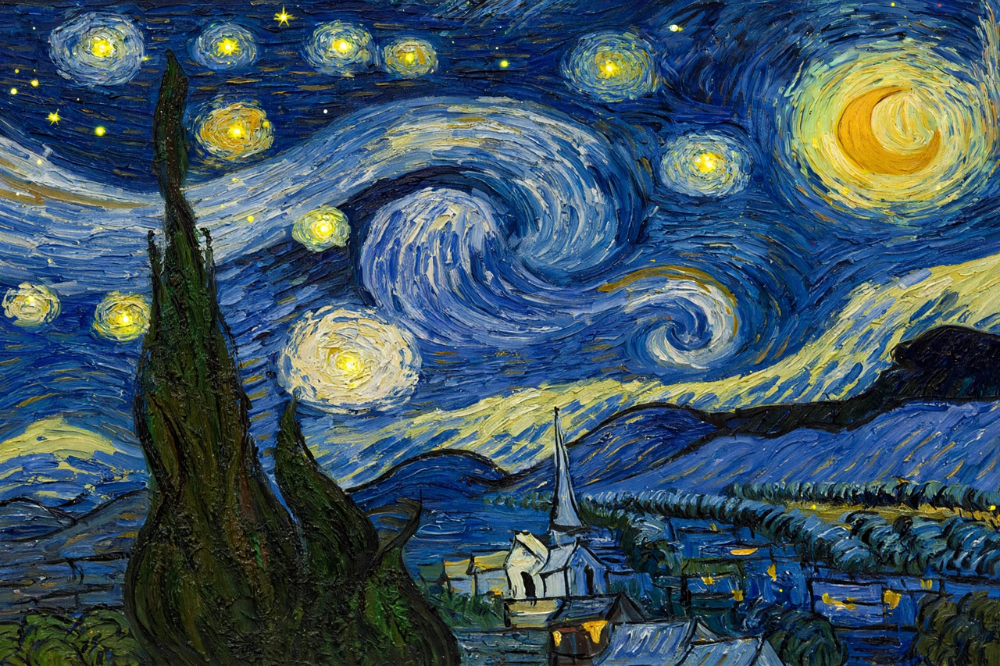

The Starry Night
| The Starry Night | |
|---|---|
| Artist | Vincent van Gogh |
| Year | 1889 |
| Medium | Oil on canvas |
| Dimensions | 73.7 cm × 92.1 cm |
| Location | Museum of Modern Art (MoMA), New York |
The Starry Night is an oil-on-canvas painting by the Dutch Post-Impressionist painter Vincent van Gogh. Painted in June 1889, it depicts the view from the east-facing window of his asylum room at Saint-Paul-de-Mausole in Saint-Rémy-de-Provence, just before sunrise, with the addition of an idealised village. It has been in the permanent collection of the Museum of Modern Art in New York City since 1941, and is widely regarded as Van Gogh's magnum opus and one of the most recognisable paintings in Western art.

Description
The night sky dominates the canvas: great swirling eddies of blue and white spiral around eleven orbs of yellow and orange — stars and a crescent moon — rendered with thick, expressive impasto brushstrokes and surrounded by radiating halos. Below, a quiet Provençal village with a church spire lies calm under the turbulent heavens, its windows faintly lit. In the left foreground a huge dark cypress, painted almost like a black flame, connects earth and sky. The bright "morning star" on the horizon is thought to be Venus, which was indeed exceptionally bright in the spring of 1889.
Context and interpretation
Van Gogh painted the work during his voluntary confinement after his breakdown in Arles, basing it on the view from his window but transforming it from imagination and memory — the village is invented, and the swirling sky owes as much to inner feeling as to observation. He himself judged the painting ambivalently, writing to Theo that it was perhaps not his best work; posterity has disagreed. Art historians have proposed readings from the spiritual (a yearning for the infinite) to the scientific: the spiral patterns strikingly resemble contemporary astronomical drawings of nebulae, and fluid-dynamicists have noted that the swirls' luminance statistics match mathematical descriptions of turbulence.
Legacy
The Starry Night is among the most reproduced images in the world, printed on everything from posters to umbrellas, and it inspired Don McLean's 1971 song "Vincent" ("Starry, starry night…"). Along with Sunflowers and the self-portraits, it anchors Van Gogh's posthumous fame — fame that arrived only after his death in 1890, a year after he painted it.